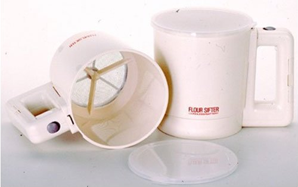

I have this recipe that I would say I make fairly often…special occasion, holiday, what have you… The problem with this recipe? The everlovinghandcrampingsifting. I mean holy mother of hell, the sifting alone could kill you. Then I found it. IT. A battery operated sifter! It’s UhMayZING! I have one and I gifted it 3 times last year.



Recent Comments